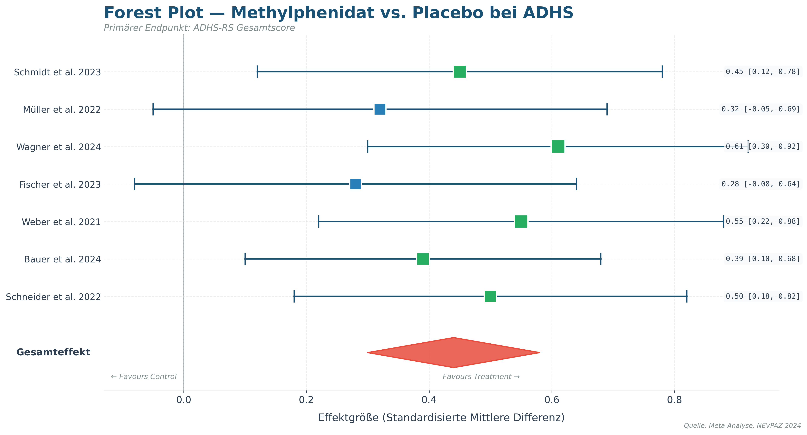
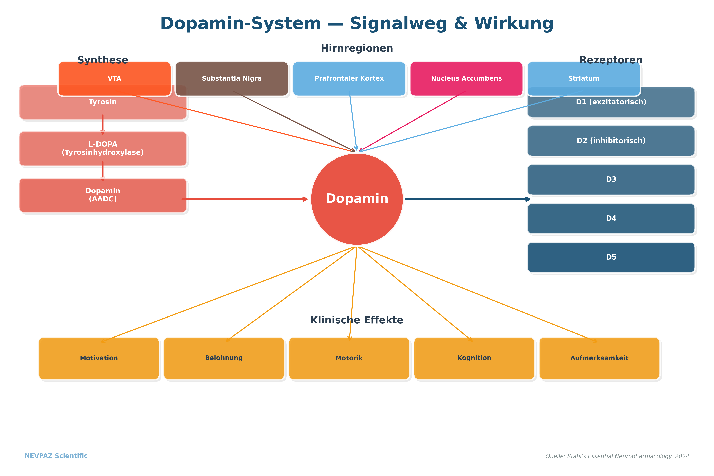
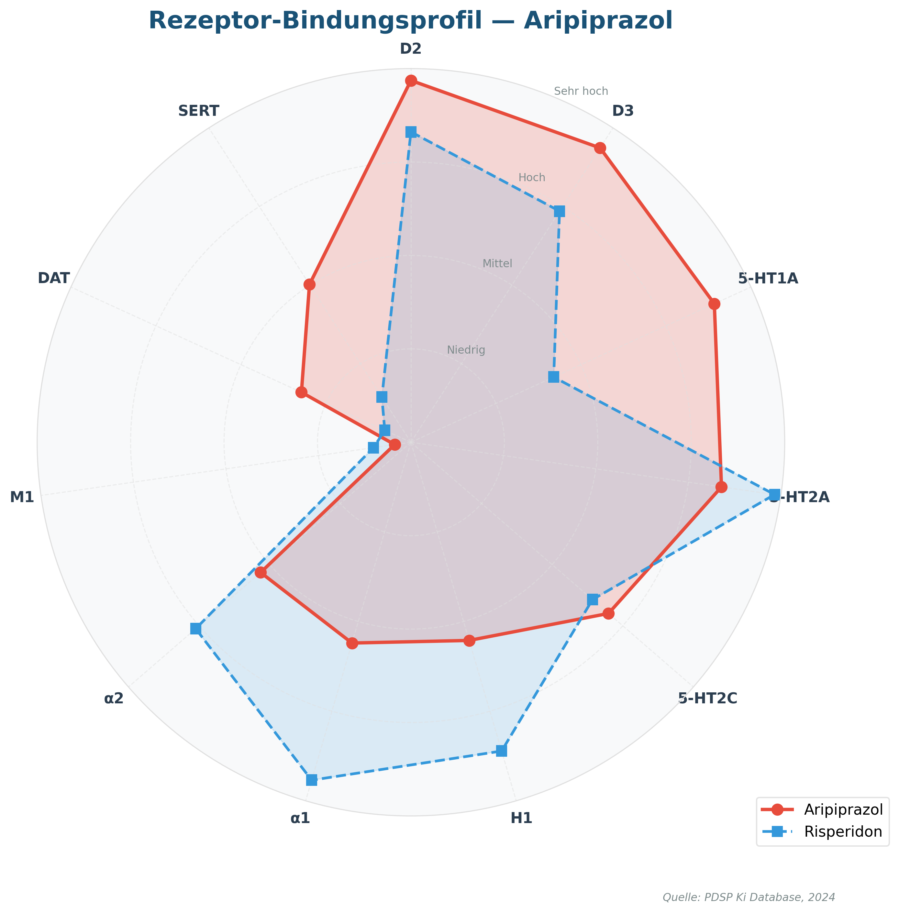
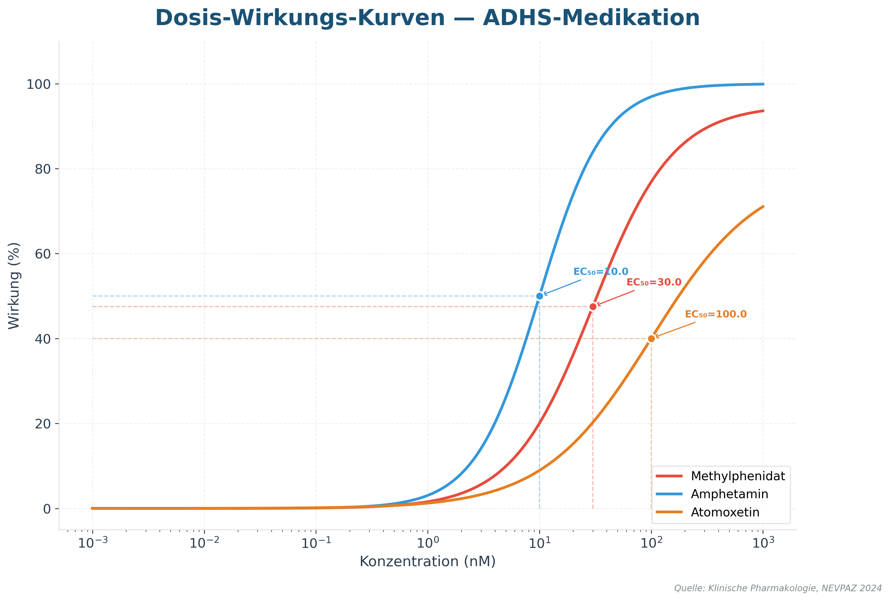
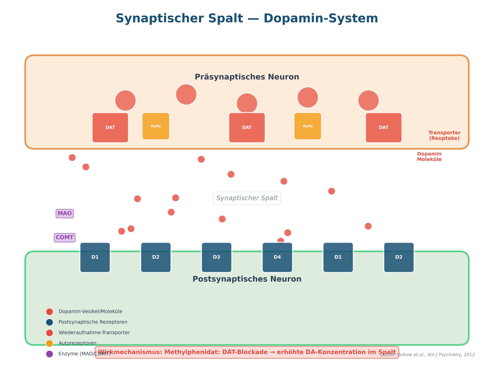
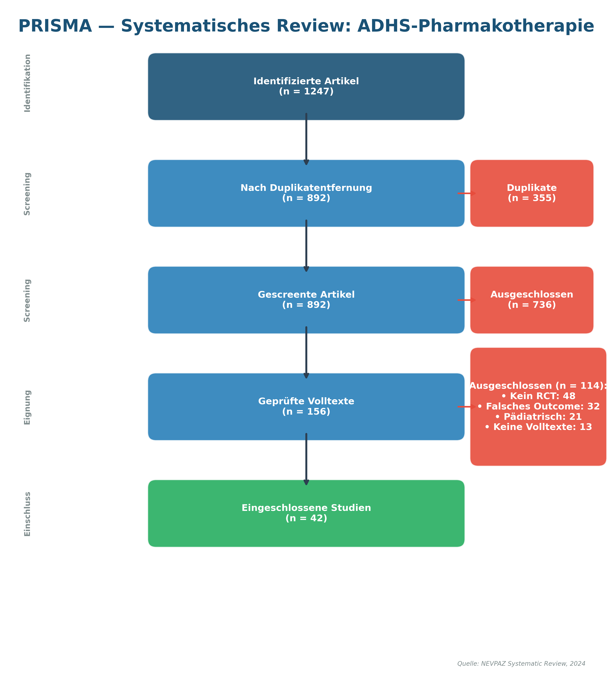

Demo-Galerie — Alle 6 Visualisierungstypen
Methylphenidat vs. Placebo bei ADHS — 7 Studien mit Effektgrößen, Konfidenzintervallen und Gesamteffekt (Diamant). Grüne Punkte = signifikant, blaue = nicht signifikant.

Vollständiger Dopamin-Signalweg: Synthese (Tyrosin → L-DOPA → Dopamin), beteiligte Hirnregionen (VTA, Substantia Nigra, Präfrontaler Kortex, Nucleus Accumbens, Striatum), Rezeptoren (D1–D5) und klinische Effekte.

Vergleich Aripiprazol vs. Risperidon über 11 Rezeptoren (D2, D3, 5-HT1A, 5-HT2A, 5-HT2C, H1, α1, α2, M1, DAT, SERT). Basierend auf Ki-Werten der PDSP-Datenbank.

ADHS-Medikation: Methylphenidat (EC₅₀=30), Amphetamin (EC₅₀=10) und Atomoxetin (EC₅₀=100) mit logarithmischer Dosisachse und EC₅₀-Markierungen.

Detaildarstellung: Präsynaptische Vesikel, Dopamin-Moleküle im Spalt, DAT-Transporter (Reuptake), Autorezeptoren, postsynaptische D1–D4-Rezeptoren, MAO/COMT-Enzyme. Wirkmechanismus: Methylphenidat (DAT-Blockade).

ADHS-Pharmakotherapie: 1.247 identifizierte Artikel → 892 nach Duplikatentfernung → 156 Volltexte → 42 eingeschlossene Studien. Ausschlussgründe: Kein RCT (48), Falsches Outcome (32), Pädiatrisch (21), Keine Volltexte (13).
